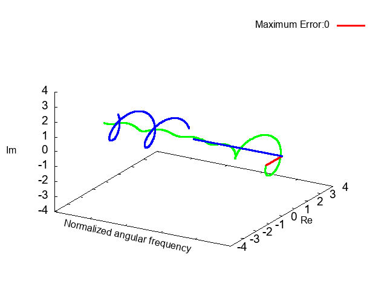

»PSOを用いたIIRフィルタ設計
»概要
ミニマックス基準に基づくIIR (Infinite Impulse Response)フィルタの設計問題に対し，PSO(Particle Swarm Optimization)を用いてフィルタ設計を行います。縦続接続形IIRフィルタの回路は次のように表されます。
設計の目標となる所望特性は次式で定義します。 \[ D(\omega) = \begin{cases} e^{-j\omega \tau_d},& \omega \in [0, \omega_a]\\ \rm{don't\ care}, & \omega \in (\omega_p, \omega_s)\\ 0,& \omega \in [\omega_s, \pi] \end{cases} \] ここで，$\tau_d$は所望群遅延，$\omega_p$は通過域端角周波数，$\omega_s$は阻止域端角周波数を表します。
本設計では，IIRフィルタの安定性と振幅隆起抑圧の条件の下で出来る限り$D(\omega)$(青線)と$H(\omega)$(緑線)の最大誤差(赤線)が小さくなるようなフィルタ係数を求めます。

»設計条件
設計するIIRフィルタの設計条件です。
分子次数 : $N_1 + N_2$ =
分母次数 : $M_1 + M_2$ =
通過域端周波数 : $\omega_p$ = $\pi$
阻止域端周波数 : $\omega_s$ = $\pi$
所望群遅延 : $\tau_d$ =
許容最大振幅値 : $\delta_t$ =
近似帯域分割数 : $S_a$ =
遷移域分割数 : $S_t$ =
»PSOの設定条件
設計手法であるPSOの設定条件です。
個体数 : $P$ =
最大探索回数 : $I_{max}$ =
慣性重み係数 : $w$ =
自己最良解に対する重み係数 : $c_1$ =
群最良解に対する重み係数 : $c_2$ =
スケーリング係数の初期範囲 : $[-s_{ini}, s_{ini}]$, $s_{ini}$ =
分子係数の初期範囲 : $[-a_{ini}, a_{ini}]$, $a_{ini}$ =
注意!
個体数や最大探索回数を大きな値で設定すると計算負荷が大きくなります。